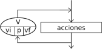

For

The Para instruction executes a sequence of instructions a fixed number of times.
Para <variable> <- <inicial> Hasta <final> Con Paso <paso> Hacer
<instrucciones>
FinPara
When entering the block, variable <variable> receives the value <inicial> and the sequence of instructions in the loop body is executed. Then the variable is incremented by <paso> and it is checked whether the value stored in the variable has passed the value <final>. If it has not, the loop repeats until the variable goes beyond <final>. If the Con Paso clause is omitted, the variable is incremented by 1.
If flexible syntax is enabled in the language configuration, two alternatives are available. The first replaces the assignment operator with the keyword Desde:
Para <variable> Desde <inicial> Hasta <final> Con Paso <paso> Hacer ...
This makes the sentence easier to read. In addition, with flexible syntax, if no step is specified and the final value is smaller than the initial one, the loop traverses the values in reverse order as if the step were -1. The second variant is only for traversing one-dimensional or multidimensional arrays. It uses the construction Para Cada followed by an identifier, the keyword De, and another identifier:
Para Cada <elemento> De <Arreglo> Hacer ...
The second identifier must refer to an array. The first one is the value that changes on each iteration. The loop performs as many iterations as the array contains elements, and in each one the first identifier refers to the current array element.
The Average example uses a loop of this type to read N numeric values and compute their average.
The For example uses the three variants of this kind of loop to traverse an array.